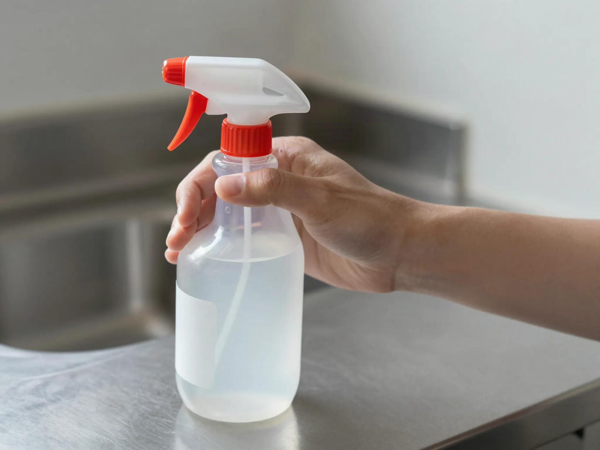

Featured partner
Their price table sits in the open on their own site — bedroom count, frequency, first clean. You get the number before you pick up the phone.
Wrenly Home
Wrenly Home cleans houses across Peoria, Peoria Heights, Dunlap and Morton, and it is the only company here that publishes what a clean costs by home size instead of making you ask.
The first visit is always a deep clean — edges, inside the oven and fridge, the tracks — and after that the regular price applies. Supplies, products and the crew's own transport are theirs.
2-bed home, every two weeks$189 a visitFirst visit $272, booked as a deep clean. Full price table by home size on their site.
- The price is on the siteA published table by bedroom count, so you can budget before anyone knocks.
- 48-hour guarantee windowSomething missed, they come back inside 48 hours. In writing, on their own site.
- Booked online, any hourReal open slots three days out, seven days a week, 8am to 5pm.
Serves Peoria, Peoria Heights, Dunlap and Morton. Prices are published on their site, so you can price a home before you call.